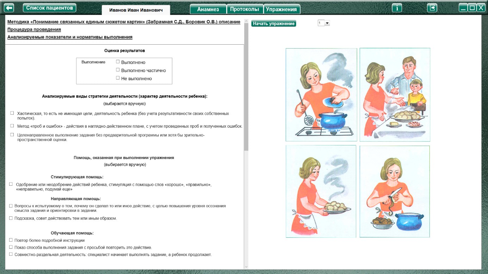
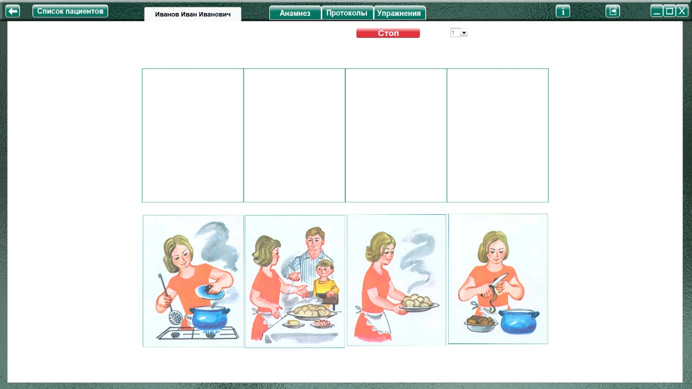
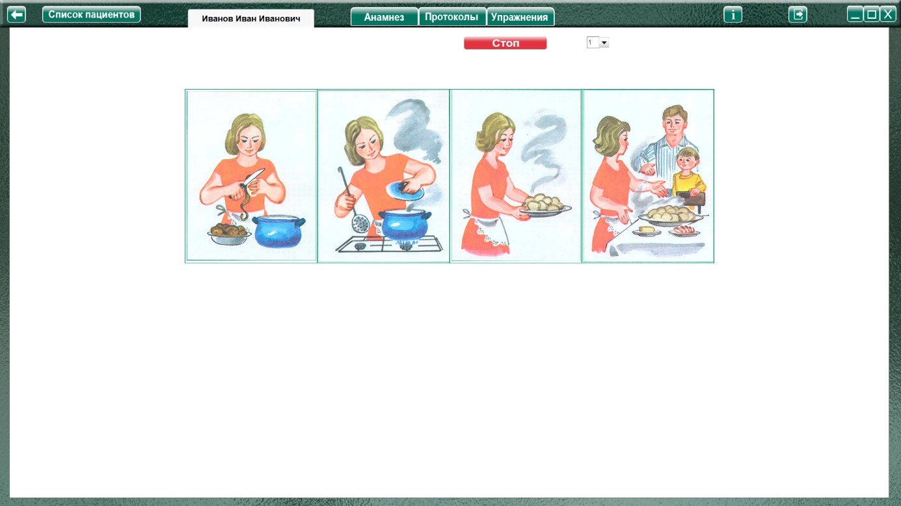

Методика "Понимание связанных единым сюжетом картин"
(Забрамная С.Д., Боровик О.В.)
Методика "Понимание связанных единым сюжетом картин" (Забрамная С.Д., Боровик О.В.) описание
Процедура проведения.
Ребенку предлагают рассмотреть таблицы с изображением событий и положить их в необходимой смысловой последовательности. После этого обследующий предлагает ребенку составить по ним рассказ.
Анализируемые показатели и нормативы выполнения
Дети с нормальным умственным развитием задание 1,2 выполняют к 5—6 годам, в 7—8 лет самостоятельно справляются с заданием 3. При составлении рассказа некоторым из них нужна помощь со стороны взрослого (уточняющие вопросы).
Дети с задержкой психического развития при установлении причинно-следственных связей испытывают трудности, особенно при составлении рассказов по таблице 3. При оказании помощи это задание выполняют.
Умственно отсталые дети в 7—8 лет лишь перечисляют изображенные на картинках объекты. Они не могут сами установить последовательность событий, особенно в таблице 3, 4. Попытки составить рассказ по наводящим вопросам ограничиваются только рассказом по одной картинке. Помощь неэффективна
Оценка результатов
Характер деятельности ребенка:
Виды возможной помощи:
Стимулирующая помощь
Направляющая помощь:
Обучающая помощь:
Протокол фиксации результатов исследования
_________________________________ _______________
ФИО Дата рождения
Методика |
Понимание связанных единым сюжетом картин |
Автор методики (адаптации, модификации) |
Забрамная С.Д., Боровик О.В. |
Цель: |
Выявить умение устанавливать причинно-следственные связи; делать обобщения; давать оценки воспринимаемым ситуациям; уровень речевого развития ребенка. |
Дата / специалист |
|
Результат: вывод об уровне развития |
|
Примечание |
|
Процесс выполнения диагностической методики |
|
№ |
Факт выполнения / Время |
Характер деятельности ребенка |
Виды помощи |
Логика заполнения протокола
Заполняется автоматически
Имя специалиста – логин при входе в программу.
Дата – дата и время прохождения упражнения в формате дд.мм.гггг. чч:мм
Факт выполнения (выполнено, не выполнено.) / заполняется в зависимости от выбора в разделе оценка результата.
/ Время - время, затраченное на прохождения задания.
№ номер выполнения задания
Ячейки «Характер деятельности ребенка», «Виды помощи» заполняются в зависимости от проставленных чекбоксов в разделе «Оценка результатов» или записи специалиста.
Остальные ячейки заполняются (правятся) специалистом самостоятельно.
Выполнение упражнения.

При нажатии «Начать упражнение», закрывается область оценки результата открывая задание на весь экран

Выполнить задание согласно пункту «Процедура проведения». Необходимо переместить картинки в нужной последовательности в квадратики разметки при помощи мышки с зажатой левой кнопкой.

По окончании задания (после придумывания ребенком рассказа) специалист нажимает кнопку «Стоп», открывая область оценки результата. Специалист выбирает (или вписывает самостоятельно) факт выполнения, виды помощи и характер деятельности ребенка, затем по нажатию кнопки «Сформировать протокол» формируется протокол выполнения задания.
Только после формирования протокола по заданию можно продолжить выполнения упражнения!
Для продолжения выбрать в меню следующее задание и нажать кнопку «начать упражнение».